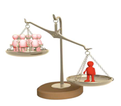
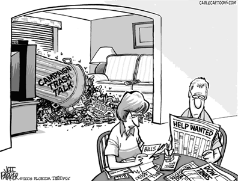
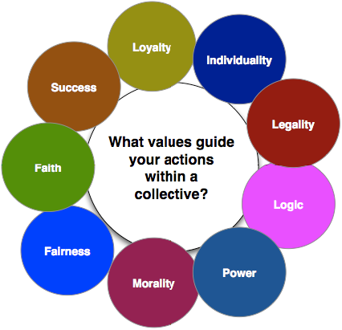
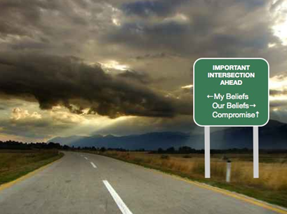
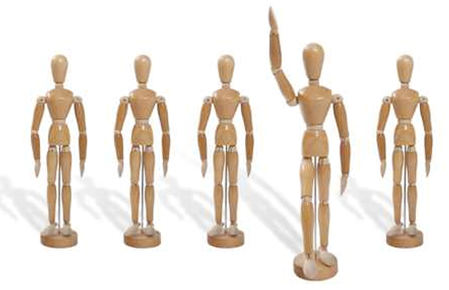
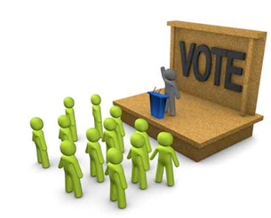
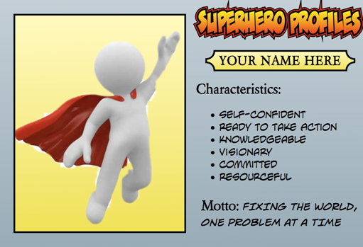

Unit 7 Introduction Human beings are social creatures. It is not our ability to organize and to work together toward a common goal that makes us unique among the creatures that inhabit this world, however.
Unit 7 Introduction
Human beings are social creatures. It is not our ability to organize and to work together toward a common goal that makes us unique among the creatures that inhabit this world, however. There are multiple examples in the animal world of creatures that work together to for the betterment of the whole. Ants and bees live in societies where the roles of workers, drones, and the queen are determined by instinct.
For human beings, however, living in a society requires that they manage the complex interplay between a personal ideology and the ideologies of the collectives to which each individual belongs. You have the ability to rationally evaluate the ideals and objectives of the groups to which you belong and adjust your personal actions accordingly.
In this unit you will start to consider the degree to which you will become involved in the shaping the society in which you live. You will explore the potential advantages and pitfalls of supporting a collective ideology and evaluate your the degree to which you personal ideals will govern your participation in collectives. Finally, you will start to carve your own path to become an informed and engaged citizen, prepared to take action to advance your personal ideals and to find and organize others who share common concerns and goals.
Upon completion of this unit, you should be able to confidently address the question, “To what extent should my actions as a citizen be shaped by an ideology?”
Watch & Listen
Please watch the "I pledge" video below. What do you pledge to do?
Section 1 Introduction In this section you will begin to develop an understanding of issues surrounding public engagement and disengagement in the political process and how political decisions can impact you personally.
Section 1 Introduction
In this section you will begin to develop an understanding of issues surrounding public engagement and disengagement in the political process and how political decisions can impact you personally. You will also begin to evaluate your own attitudes towards active participation in the political process.
In Section 1 you will be responding to this question: To what extent should I engage in the political process?
In This Section
In this section there are three lessons.
In each lesson you will have opportunities to
• explore issues related to individuals’ engagement in the political process • reflect on your own attitudes regarding the political process and your role in it
Outcomes
In this section you will develop your understanding of:
factors that limit people’s involvement in the political process
the ways in which government actions can impact you personally
the potential modifications that could be made to encourage greater political participation on the part of the citizenry
As well, you will continue to develop the following skills and processes:
engage in active inquiry and critical and creative thinking
conduct research ethically using varied methods and sources; organize, interpret, and present your findings; and defend your opinions
apply skills of metacognition, reflecting upon what you have learned and what you need to learn
recognize and responsibly address injustices as they occur in your school, community, Canada, and the world
communicate ideas and information in an informed, organized, and persuasive manner
Glossary
carbon footprint: the amount of carbon dioxide released into the atmosphere over a given period as a result of an activity or process
caucus: collective term for the elected members of a political party
microblogging: the use of technology to provide frequent short updates to interested individuals
reclaimation: turning damaged or wasted land into a viable habitat for plants and animals
royalties: payments made by a company extracting a resource to the owner of the resource
subsidize: to provide partial financial support for something
tailings ponds: reservoirs used to contain the liquid by-products of mining processes
Roadblocks to Active Citizenship Get Focused The freedom of speech. The right to peaceful assembly.
Lesson 1: Roadblocks to Active Citizenship
Get Focused
The freedom of speech. The right to peaceful assembly. The right to vote. History, and the present day, are filled with tales of those who fought and sometimes died trying to obtain such rights for themselves and for their children. And yet, in some of the world’s more mature democracies, these right appear to be taken for granted and, increasingly, are underutilized by the common people.
Decreasing voter turnouts in recent elections are just one symptom of what some researchers fear is a growing lack of interest and involvement in government and politics, on the part of citizens in Canada and many other democracies. Since liberal democracy is largely founded on the premise that citizens will take an active role in choosing their government, and holding that government responsible for its actions, a politically disengaged and disconnected population represents a serious threat to any democracy.
There are a variety of reasons offered for this apparent trend. For some people, politics and current affairs simply hold no interest whatsoever. Others have perhaps become jaded by political scandals and washed their hands of politics altogether. Some may entertain thoughts of greater involvement but face a variety of barriers real or imagined that prevent them from fully participating in democracy.
And in the case of younger generations, it may not be that they have abandoned democracy as much as they have become frustrated with traditional democratic institutions. Regardless of the reasons, political disengagement and disconnection are fundamental issues with which society must grapple if it is to continue to enjoy the benefits of liberal democracy. To that end, you must look deeper into its causes.
In Lesson 1 you will explore this question: What factors may limit an individual's involvement in the political process?
Explore
Voting is by no means the only political act a citizen can undertake. It is, however, one of the fundamental responsibilities of a citizen in a democracy, and it provides a regular and easily quantifiable measure of citizen engagement in the political process. But while voting statistics generated during elections can reveal how many citizens are not voting, they don’t necessarily explain why citizens are not voting. Consider some of the comments made in the passages below.
Voices
Earl I don’t really get why we have so many elections. What are all these people being elected to do? I had someone come around two months ago asking me to vote for her. I told her if she could promise me that my road would be plowed more often in the winter I might vote for her even though I never voted before.
She said that she was running for, aww... I can’t remember, Parliament, I think. Anyhow, she said that snow removal was the city’s responsibility. Well, then, what’s she going to do if she gets elected? All these people getting elected and what do they do? Why should I vote for any of them?
Alyssa Oh, yeah, I used to vote. I voted in the last three elections and I watched the results come in on election night. In each election the candidate I voted for lost. So, that’s life right? You win some, you lose some. But the party I support seems to lose them all. And you know what bugs me the most? The winning candidate in my riding got only 150 more votes than my candidate and he sure didn’t get the support of the majority of the voters.
In fact, on TV, when they showed the total number of votes each party in the election got, the ‘winning’ party got only 46% of the votes, but they still ended up with around two-thirds of the seats available in parliament. Explain that to me. Forty-six percent of the votes translate into 66% of the seats? I’m tired of wasting my time going out to vote in an obviously rigged system. From what I see, this isn’t really a democracy anyhow.
Garry I know voting is important, but I really don’t know who to vote for. I had two or three people come to my door last election asking me to vote for them. They were all nice people. I couldn’t really decide between them. They gave me some pamphlets to look at and, from reading them, I could see that all the candidates had lots of experience and were probably qualified. Beyond that, however, I didn’t understand much else.
They each had some stuff in the pamphlets about the health care budget and the crime rate. I didn’t even know there was a problem with those things. I’m guess I’m pretty healthy and I’ve got a dog so I’ve never had a problem with people breaking in. I suppose there could be health care and crime problems for other people. The candidates clearly had different opinions about what to do to solve the problems they were talking about, but I haven’t a clue who to believe.
Keri I should have voted in the last election. In fact, I’ve even thought about helping out with a political party, but I’ve got too much on the go with my volunteer work already. I’m working down at the food bank, three afternoons a week. I’m on the organizational committee for our annual gala to raise money for the town hospital.
Last year we raised enough to buy a two blanket warmers, one for the maternity room, and one for the senior’s wing. It was really fulfilling to know that I helped the hospital provide better care for patients. I’m also on the school council. We’re organizing a barbecue to raise funds for new computers for the school. So, you see, although I think politics would be interesting, I’ve already got too many other commitments.
Atif You know, I do watch the news so I see the leaders of the parties, but none of them really stand out for me. Most of them are way older than me and, well, we live in different worlds. I met one guy once when he came through town. He toured our school. I was working in the computer lab at the time and he asked me a few questions about what I was doing. I was a little surprised at how clued out he was about the web. I mean, he knew a bit about search engines and stuff, but he really didn’t know much about the social networking sites I use.
He had one of his assistants come over and talk to me a bit more afterward, but you know after I talked to her for awhile, I really felt like her interest was in getting her boss elected, not necessarily making the country or the world a better place. I don’t know, it just seems to me that a lot of politicians, regardless of which party they belong to, are just offering more of the same old ideas. I can’t think of one of them that has a message that would inspire me to get out and vote for them.
Alexi Politics: Who cares about that stuff? We had some people come out to our school in my Grade 12 year and talk to us during the last election. Put me to sleep, dude. My buddies and I were texting jokes back and forth the whole time. What’s worse, the election happened right in the middle of the playoffs. Here I’m looking to watch the game on TV and everything’s all election stuff. Really, our team is actually a contender for the cup for a change and the TV networks are pre-empting the game for an election? Talk about screwed up priorities.
Tonya Look, our life is pretty simple. We get up in the morning, get the kids to school, and we go to work. On the weekends we’re doing sports tournaments with the kids, or we’re out snowmobiling or quadding or catching up on work around home. I don’t really have feelings about the government one way or the other.
My husband and I both have jobs. We pay our bills. We pay our taxes. We’re not rich, but we’re not poor either, so we’re happy enough. Why bother getting involved with all that political stuff? It doesn’t really affect us that much.
Journal/Notes
Review the above comments a second time. As you do, try to write down some generalizations about what has distanced each person from political involvement. Retain these generalizations for use later in the lesson.
Read
In Canada, efforts are being made to ascertain the reasons why many people, in particular eligible young adults, are choosing not to vote. Consider the conclusions of a recent paper on electoral reform:
“Of particular concern in recent years has been the lack of youth participation in traditional political processes. For example, only about 25 percent of eligible voters between the ages of 18 and 24 cast ballots in the 2000 federal general election. Although there is a range of factors contributing to the non-participation of youth, including a lack of knowledge about politics and insufficient time to vote, there is evidence to suggest that many youths do not feel connected to the system of democratic governance, or that they lack interest in politics. The chart on the right, taken from a recent study completed in co-operation with Elections Canada, reveals some of the reasons that people provided when asked why young people did not vote in the 2000 election. As the table illustrates, one-third of people under the age of 25 cited disinterest and apathy as perceived reasons why youth did not vote, while two fifths suggested that not feeling represented or connected played a role in the decision not to vote.”
Look at the generalizations you made after previously reviewing the comments in the Voices section. Do your generalizations match some of the same reasons given in the chart above?
Lesson Summary
There are a multitude of factors that may limit an individual’s participation in the political process. Some people may lack education and understanding regarding the functioning of government and their role in it. Others may be largely unaware of the important issues facing their society, and, therefore feel unequipped to make an informed choice regarding which individual or political party should have the power to address those issues. Political scandals, the perception that politicians are self-serving, and frustration with electoral systems can also turn people off voting.
Some individuals are happy, or at the least complacent, with the status quo. Therefore, they may see no need to involve themselves in the political process. A few argue that they are just too busy. Still others see voting and politics as uninteresting, a waste of their time, or a manifestation of a system that is largely out of touch with the issues that are important to them.
Much of the concern over citizens’ increasing disengagement and disillusionment with politics is based on declining voter turnout during elections. In a system where the majority rules, the prospect that the majority might not even show up to choose the next government, is an issue of crucial importance. That said, it must also be recognized that traditional forms of political actions, such as voting in or running in an election, protesting or letter writing campaigns, or joining a political party are not the only routes to address societal issues.
There are other approaches to advancing one’s personal ideology and to being an involved citizen. Both the subtle and more overt approaches to political action will be explored further in a future lesson. In the next lesson however, you will first start to explore why your willingness to be politically aware and active is important for you, and those around you.
Making it Personal Get Focused In a representative democracy it is sometimes very easy to lose sight of the ever-present role that government plays in citizens’ lives.
Lesson 2: Making it Personal
Get Focused
In a representative democracy it is sometimes very easy to lose sight of the ever-present role that government plays in citizens’ lives. Voters casting their ballots in an election may not be asked to do so again for nearly five years. As individuals busy themselves with school or work, life’s many errands and tasks, and enjoyable activities, they may have little time to ponder how the decisions made by their government affect them. And yet, the role of government in people’s lives is pervasive. In order to better understand why you should take an active role in your democracy, it is important that you gain a better understanding of how your government’s decisions affect you.
In this lesson you will explore this question: To what extent do the political decisions made by others impact my life?
Explore
Watch & Listen
Watch a public service announcement encouraging voters to make their voices heard in civic elections in New Brunswick:
If and when you go to the polls to cast your vote in a civic, provincial, or federal election, you will help to choose the people who make decisions that can affect your life in many ways. These decisions can save or cost you money, improve or detract from your quality of life, or expand or restrict your rights. You will next explore just a few of the many ways in which government can affect you.
Taxes
There is an age-old adage that there are only two certainties in life: death and taxes. To be sure, almost all citizens pay tax in some form or another. In Canada both the federal and provincial governments will tax you on your income. If you own real estate, you will likely have to pay property taxes to the local level of government. Even if you rent, the cost of property taxes paid by your landlord will be passed on to you. Canadians pay a Goods and Services Tax (GST) on many items that they purchase.
Most provinces, with Alberta being a notable exception, also have provincial sales taxes that are levied on consumers. Gasoline is taxed. Governments also implement “sin taxes” on goods like tobacco and alcohol to try to limit consumption of these often harmful products, while increasing government revenues.
While few people enjoy paying taxes, it is important to remember that taxation is necessary. The money collected is used to pay for the multitude of services provided by the various levels of government. When a snow plow clears your road in the winter, it is not a free service. You or your parents have paid for it through taxes. The learning resource you are using right now has been produced by the provincial government using collected tax dollars. When you do something as simple as consulting a weather report to plan an outdoor activity, the data and forecasts you use have likely been provided by Environment Canada at some cost to you, as a taxpayer. As a citizen it is your right, and your responsibility, to make sure that your tax dollars are being spent on worthwhile programs and in an efficient manner. After all, it’s your money.
Discover
The Canadian federal government taxes your income using a progressive tax system. People who earn more money pay a higher percentage of income taxes. Most provinces also use this system, but a few use a flat-tax system in which each person pays the same percentage, regardless of income.
It is relatively easy to get an approximation of the amount of taxes that you owe, by referencing your level of income. How much money per year do you hope to make in your future career? How much of your envisioned earnings would you have to pass on to the government in income tax?
To get a rough estimate, enter the search terms “Canada Income tax calculator” along with the previous year (for example, 2008) into a search engine. Use one of the many tax calculators to get a sense of how much tax you would have to pay according to your desired earnings.
Post-Secondary Education
Statistics show that your earning potential increases with the number of years of education you have received. Therefore, it is in your best interests to pursue post-secondary studies after you graduate from high school.
Perhaps you already have developed plans for additional schooling or training in the future. If so, you have recognized that most post-secondary education, unlike your K-12 schooling, is not paid for by the government. Students are generally responsible for paying their own tuition. Tuition fees, however, do not cover the entire cost of operating a large educational institution such as a university.
Governments frequently subsidize post-secondary educational institutions, helping them pay for the cost of educating citizens. The degree to which governments should subsidize advanced education is a matter of public debate. If you are planning to attend such an institution, it will be of significance to you. Consider the following pie charts.
As you can see, the responsibility of paying for higher education in Alberta has, over time, increasingly been shifted onto students, parents, private interests, and therefore away from government. There are clear rationales for this, based in ideology. Some individuals believe that obtaining a post-secondary education should be mostly the responsibility of the individual, and less of a responsibility for the taxpayer.
Others argue that society, as a whole, benefits by having a population that is better educated. Many also feel that government has a responsibility to improve the lives of all citizens. The question of educational funding is often painted as a conservative versus liberal issue, with conservatives typically supporting a user pay model and liberals advocating a publicly funded model.
Journal/Notes
Should you, as a taxpayer, have to pay to help someone else obtain a degree which will allow them to earn more income? Would it be likely that students would place more value on their education and study harder, if they were required to pay an increased share of the cost of that education? How might increasing tuition rates affect economically disadvantaged students’ access to post-secondary education?
Discover
Some people might argue that today’s youth are being saddled with higher education costs and larger student debts than generations past. Do some research. First, read an article or two on the Internet, related to student debt amounts. You can access articles on this topic by entering the keywords “average student debt Canada” in a search engine.
Secondly, you may want to get a sense of how much your elected representatives may have benefitted from lower tuition rates when they were your age. You can get the educational history of many politicians by accessing their biographies on the Internet. Alberta MLA biographies are available by going to a search engine and typing “Alberta MLA biographies.”
A list of Federal MPs is available here. You can search your MP by name or your postal code.
Journal/Notes
Is it reasonable to expect that post-secondary students should have to pay for roughly the same percentage of their education as the previous generation? What other factors might have to be taken into account when determining the fairness of increasing tuition costs?
Water and Food Safety
You wash your food with it. You brush your teeth with it. You drink it every day. In a developed country such as Canada, the safety of the drinking water supply is taken for granted. The nation’s lakes, streams, and rivers can harbour bacteria, viruses, parasites, and both man-made and naturally-occurring toxins.
It is the responsibility of the government to ensure that the water supply people depend on is safe. Similarly, most consumers take it for granted that the food they purchase at their local supermarket has been inspected by the government and is safe to eat.
Governments however, must deal with the realities of limited budgets and increasing costs for providing services. As they seek to reduce government debts and avoid tax increases, governments are constantly seeking new efficiencies and, on occasion, will cut or scale back services. In some cases, government changes to food and water inspection regimes have contributed to outbreaks of dangerous water-borne and food-borne diseases.
Discover
To get a greater sense of the important role governments play in maintaining the safety of your food and water, learn about the tragic events that occurred in Walkerton, Ontario in the spring of 2000, by going to a search engine and typing in “cbc archives.” When on the site, click on “Environment,” then “Pollution,” and then go to “Death on Tap: The Poisoning of Walkerton."
Also do a search and view the Rex Murphy video editorial (3 minutes) from June 2000. Search: "Rex Murphy on Walkerton".
Environment & Economy Balance
This is personal for many Albertans. As you have learned in past lessons, global climate change is a pressing issue which affects everyone. The burning of fossil fuels has been identified as one of the main contributing factors to global warming. This reality has put energy-rich regions of the world, such as Alberta, at the centre of debates about the environmental effects of energy production.
Alberta sits upon one of the largest deposits of oil in the world. For years, much of this oil was easily obtainable through traditional drilling and pumping methods. But as reservoirs of easily obtainable oil have been consumed, attention has turned toward the vast oil reserves locked up in the Athabasca Oil Sands.
While these reserves are immense, the oil they contain must be separated from sand, which is a process requiring significantly more enery input to gain a barrel of usable oil than would traditional drilling. As a result of the high carbon footprint of the oil-sands product, some environmentalists have labelled it dirtyoil. And extraction is generally more expensive than oil extraction in some other parts of the world.
There are other environmental concerns associated with the oil sands. Oil-sands facilities use considerable amounts of water from the Athabasca River. Critics argue that further expansion of these extraction facilities will draw even more water from the river, reducing the flow significantly. Downstream is the Peace-Athabasca Delta, one of the world's largest inland freshwater deltas, now threatened with falling water levels.
At the river’s edge, one of the world’s largest dams holds back billions of litres of toxic water that is a by-product of the oil-sands production process. Fears that the dam will leak significant quantities of toxins into the neighbouring Athabasca River have also made it a target of environmental and aboriginal groups. Some experts believe that there may be a link between high cancer rates in aboriginal communities along the Athabasca River watershed and seepage from the tailings ponds beside the river upstream.
As well, oil-sands production has necessitated the destruction of kilometres of boreal forest. While efforts to reclaim the land once the oil has been extracted are ongoing, many environmentalists contend that reclamation does not return the land to its original state and that reclamation efforts pale in comparison to the increasing amount of land being given over to oil-sands production.
Discover
Use one of the many mapping applications available online to have a look at the scope of oil-sands production in Alberta. Try to use an application which will provide you with a satellite view of the area. The oil sands are located at approximately 57° 1'9.78"N and 111°34'52.68"W.
Search "Tech Frontier project". Don't just look at their website. Look at a variety of internet sources to explore the pros and cons of this proposed expansion of the oil sands.
For residents of Alberta, the oil sands have been a generator of significant wealth. Royalties paid to the Alberta government by oil companies help to keep other taxes low to fund provincial programs (eg. we have no provincial sales tax). The development of the oil sands have driven employment rates upwards in the Fort McMurray area, especially when world oil prices are high, and have created spin-off jobs around the province. At the same time, when world oil prices drop, it is a major blow to Alberta's economy.
Alternative energy programs in most nations are still in their infancy stages (perhaps "toddler" now with electric cars becoming more common) and it may take decades until alternatives are able to meet present world energy requirements. Until then, many people point out, fossil fuels like oil will continue to provide much of the world’s energy.
While the oil sands have these things in their favour, the citizens of Alberta cannot ignore or wish away the obvious environmental issues surrounding this form of energy extraction. The decisions on how to tackle this issue has the potential to affect all Albertans economically and environmentally.
Click here to review the chart to look at some of the problems and potential solutions to environmental issues surrounding the oil sands.
One solution to many of the problems listed in the chart would be to close the oil- sands plants completely. While this would address some of the issues related to CO2 production and water use, it would still take years, and billions of dollars, to clean up oil-sands sites and restore the region to its original state. The money for this will eventually have to come from somewhere.
Some people would argue that in the distant future, the plants will have to shut down anyway and that profits from the sale of oil today will ultimately pay for reclaimation projects in the future. Critics are less optimistic that sufficient money is being saved for future clean-up efforts (see Alberta's experience with orphan drilling wells).
Undoubtedly, closing the oil-sands plants would have a massive economic impact on Alberta, with many people losing jobs not only at the plants, but around the province. Oil royalties would also diminish, probably leading to higher taxes or program cutbacks as the government’s revenue stream diminishes as well. Also, stopping oil-sands production would result in a drop in world oil supplies.
Clearly, both the Alberta and Canadian governments face some significant challenges related to the oil sands. These challenges, however, are your challenges as well. Whatever courses of action governments choose to take on issues surrounding oil-sands production, there will be both enviromental and economic consequences that will likely affect you, even if you live far from the oil sands.
Copyright Do you record television programs for later viewing? Do you download movies to play on your computer or a mobile device? Do you download audio books or music from webistes? Purchased? If you engage in any of these activities, you are subject to laws governing copyright.
Copyright laws exist to protect the producers of artistic content like movies and music, who have a legitimate right to profit from their efforts. But the ever-changing technological landscape had muddied the copyright waters putting content producers’ profits at risk, while leaving many consumers of digital media on uncertain legal ground.
In order to protect artists’ and media companies’ rights, the Canadian government attempted, on a number of occassions, to deal with new copyright concerns through legislation. In recent years, potential laws have been drafted in an effort to more clearly establish who owns the music and video material you have in your collection and indicate exactly how you can use it. These laws will impact what you can do with the music and movies you buy or download. It is worthwhile to understand how these laws affect you and provides you with information to decide whether you feel your rights have been revoked.
Discover
Using the Internet, research proposed alterations to copyright law in Canada. A good starting point would be Bill C-60; and its successors, Bill C-61; C-32; and C-11, the latter of which became law. Discover for yourself the changes that were suggested and made into copyright law in Canada.
Learning Activity
To verify and solidify your understanding of the material you have read and researched, complete the question sheet for this lesson by going to “Lesson 2 Question Sheet.”.
When complete, place your question sheet in your journal/notes/course-folder.
Lesson Summary
The size and complexity of modern democracies have required that, with the occasional exception, governmental decisions are carried out by a small group of individuals chosen to represent the rest of society. By designating decision-making authority to others, however, it can be easy for citizens to lose sight of the fact that they have put their money, their future, and, in many ways, their lives, into the hands of other people.
Working individuals must surrender a sizable portion of their income to governments through taxation. Property owners and consumers also pass monies to governments in the form of taxes. While it is not required that taxpayers give the slightest attention to how that money is spent by government officials, it certainly seems sensible for taxpayers, like yourself, to remain reasonably aware of how their money is being spent.
You should also be aware of the role your tax dollars play within your community. If you are seeking higher education, tax dollars could be used to lessen your financial burden. By the same token, many would argue that tax dollars are too often used to subsidize one group within society at a cost to everyone.
Even the most strident individualists would likely support the notion that government should provide basic services. Although most individuals infrequently need policing, firefighting, ambulances, and military security, these services are crucial in times of emergency.
Even less frequently considered, however, are basics like safe drinking water. Incidents, like the one that occurred in Walkerton in 2000, highlight the need for citizens to be aware of how the government is both spending and saving their tax dollars. Cutbacks to different programs can potentially affect you.
The larger an issue is, the less likely individuals are to determine how the issue and its consequences will affect them. This is often true of issues surrounding Alberta’s oil sands. Albertans, for the most part, are only vaguely aware of the economic advantages and environmental challenges that the oil sands present. It can be said then, that Albertans can become personally detached from such large-scale operations.
Climate and economic change brought about by increasing efforts to tap green energy sources will affect all citizens of the province, however. Citizens have a vested interest in ensuring that governments make careful decisions regarding the present and future management of resources and the environment.
Citizens also have a vested interest in how new technologies are used and legislated. In the example you explored, you have seen how governments are seeking to strike a balance between the protection of artists’ and corporations’ rights and your rights as a consumer of their products. The decisions governments make on such issues will likely affect you directly.
You have explored only a fraction of the ways that decisions made by your government representatives can affect you. The primary purpose of this lesson is to get you thinking about why you, and others, should take an interest in the political process.
In the next lesson you’ll start to look at ways in which the political process itself might be changed in order to give citizens more assurance that they’re being heard by their government.
Glossary
subsidize: to provide partial financial support for something
carbon footprint: the amount of carbon dioxide released into the atmosphere over a given period as a result of an activity or process
tailings ponds: reservoirs used to contain the liquid by-products of mining processes
reclamation: turning damaged or wasted land into a viable habitat for plants and animals
royalties: payments made by a company extracting a resource to the owner of the resource
Enrichment - Critical Thinking vs False Logic, Denialism, and Conspiracy Theories
Logical arguments about how to respond to global warming:
A logical and ideological debate can be had about how to respond to global warming: For example, whether private enteprise and market forces will be able to solve the problem of global warming or if we need government intervention to get the job done. That is, individualist vs collectivist solutions to problems.
Various historical or contemporary examples or factual evidence could be used to support arguments.
A conservative/individualist/neoliberal could recognize global warming as a problem and make a logical argument about the need to nevertheless continue to produce oil to maintain a strong economy in Alberta, and therefore jobs for families, and to generate revenues to finance (private) research on alternatives and efficiencies. If consumers really want to do something about global warming, they will vote with their dollars to foce companies to change. A neoliberal could argue the best way to diversify our economy is to lower taxes and increase economic freedom to attract other industries to Alberta, but this must apply to all private industries and services. They might even argue that more profits for companies means more taxes collected to pay for public services and generate sufficient wealth for remediation of global warming impacts down the road.
An opponent might argue for government imposed cuts to oil production and removing all subsidies and incentives to the oil industry because private enterprise is not acting responsibly by itself to solve this problem and/or such small steps are insufficient and will lead to much greater costs to our economy down the road (eg. remediation of global warming impacts).
A modern liberal might call for a combination of government and free market solutions to the problem posed by global warming. For example, they might support government funded research and incentives for private enterprises pursuing alternative energy sources while also removing all subsidies and incentives to industries with a heavy carbon footprint.
Logical Fallacy Arguments:
Sometimes false logic is used and one is sure to be exposed to such arguments on the internet. Global warming denialism arguments, for example, are based on false logic. For a sample of rebuttles to the most common global warming denialist arguments, see Skeptical Science. Note the global warming denialists' arguments depend on logical fallacies (false logic).
Logical fallacies are commonly used to mislead and misinform, and often with tragic consequences.
When ideological beliefs or worldviews are very strong and/or economic interests are at stake, people can be more susceptible to logical fallacy arguments.
Logical fallacies are a red flag to watch for when confronted with denialism and other internet conspiracy theories (eg. 9/11 conspiracy theories; the moon landing; genocide denial; etc).
Making it Better Get Focused Take a few moments to think about how far liberal democracy has come over the course of its history.
Lesson 3: Making it Better
Get Focused
Take a few moments to think about how far liberal democracy has come over the course of its history. In many early democracies, the right to vote or hold political office was limited to men who owned a specific amount of property. Over the years, the range of citizens who can take part in democracy has vastly increased.
As you have seen in previous lessons, however, liberal democracy is not without its problems. Some critics in Canada point to what they see as this country’s flawed electoral and parliamentary systems and argue that these systems are ripe for reform. There are also concerns over a growing trend toward political apathy and disengagement, particularly among younger Canadians.
Liberal democracy may be in need of a “tune-up” if it is to continue to function. But, as history shows, one of the strengths of liberal ideology is that it provides mechanisms for change and evolution. As you reach voting age, Canada’s democracy will truly become your democracy. One of your responsibilities as a citizen will be to determine how democracy in Canada will need to be modified to ensure that it continues to live up to the basic ideals of liberalism.
In Lesson 3 you will explore this question: What modifications to political decision-making processes could lead to greater political engagement for me and for others?
Explore
Reforming Democracy Previous lessons have highlighted some aspects of democracy in Canada which might be considered problematic. You will start this lesson by reviewing and reaffirming what you already know about what some critics have identified as the weaknesses of democracy in Canada. Once you have completed this review, you can then build upon what you know by looking into reforms which could be made to electoral and governmental systems in Canada
Learning Activity
View the instructions for “Rebuilding Canadian Democracy.” Follow the instructions provided on the worksheet. You can add to this worksheet as you progress through the lesson.
Senate Reform Many people would like to see the upper house in Canada’s bicameral legislature reformed or abolished entirely. To deepen your understanding of issues surrounding the Senate in Canada and to get some ideas for potential changes that could be made, search the term “triple e senate” on the Internet.
You should also review this primary source document, titled “Canadian Committee for a Triple E Senate.” This document is produced by an organization promoting senate reform.
Responsible Government, Party Discipline, and Representative Democracy
You should recall from previous lessons that the executive branch in Canada requires the support of the majority of the members of the legislative branch. This is the practice of “responsible government.” One of the effects of responsible government is that elected representatives, particularly if they are members of the governing party, must sometimes make a difficult choice between their party’s and their constituents’ wishes.
Former MP David Kilgour gained fame by putting the interests of his constituents ahead of those of his party. Kilgour voted against his own party’s plan to institute the Goods and Services Tax (GST) and Kilgour was expelled from the government caucus as a result. To get more insight into the issue of how party discipline undermines democracy, and to read about potential solutions, read these two documents authored by Kilgour. They are called “Party Discipline Diminishes Canadian Democracy” and “Whither Democracy in Canada.”
Electoral Reform As you have learned in previous lessons, the first-past-the-post method used to elect representatives in Canada is viewed by many as a system that can often give a government the power to govern as a majority despite having the support of only a minority of voters. To refresh your memory and to delve deeper into the issues and potential solutions to this electoral imbalance, review this document which asks the question, "This Is Democracy?"
You should also search the Internet using the keywords “electoral reform proportional representation fair vote Canada” to get additional information.
Re-engaging the People From your exploration earlier in this lesson, you may have reached the conclusion that at least in Canada, electoral and parliamentary reform would go a long way toward encouraging the electorate to be more engaged in the political process. Some form of proportional representation, modifying the principle of responsible government to provide more flexibility for elected representatives, and reforming or abolishing the Senate are all ideas that continue to be discussed in political circles.
Supporters of such changes argue that they will make government more representative of the people, restoring jaded voters’ faith in Canada’s democratic system and, hopefully leading citizens back to the polling booths.
Some observers suggest that, particularly for young people, the roots of political disengagement and apathy go deeper than just frustration with the electoral and governmental systems. They contend that many political parties are out of touch with young people and the issues that are of importance to them. Politicians and governments, the argument goes, will need to make more of an effort to engage young people if voting rates among young adults are to rise.
Certainly, many political entities are beginning to employ the communications technologies of the twenty-first century to engage younger voters. In moving beyond simple party websites, many politicians now engage in blogging, have their own personal pages on social networking sites and make use of instant messaging and microblogging services.
Governments, too, are beginning to make use of such technologies to inform citizens about pressing issues. In 2009, as concern over a potential flu pandemic grew, the Public Health Agency of Canada made use of RSS feeds, YouTube, Facebook, and Twitter to keep the public updated.
New communication technologies do much more than provide another avenue for governments and political parties to distribute information to citizens. These outlets provide citizens with an unequalled opportunity to publicize their own perspectives on issues of importance and allow people to engage in discussion and discourse with others.
Voices
"The Internet is clearly about more than sports scores and email now. It's a place where we can conduct our democracy and get very large amounts of data to very large numbers of people." Frank James
"We have technology, finally, that for the first time in human history allows people to really maintain rich connections with much larger numbers of people. It used to be, your connected group was really your immediate community, your neighbourhood, your village, your tribe. The more we connect people, the more people know one another, the better the world will be.
Everywhere, people are getting together and connecting. And using the Internet, they're disrupting whatever activities they're involved in. It's because it's a fundamental shift in power toward the bottom, toward the people as they organize themselves, and away from a small group of people who want to impose a policy top-down."
Thirty years ago, the power to extend a message to millions of people was largely the domain of governments and media companies. Now individuals around the world have the technology to publish their words or to create audio and video content that can inform and influence millions. Many of these are young people who are using their technological savvy to advance their perspective on important issues and encourage others to become more engaged in politics.
Discover
Seek out some Internet sites which encourage people to become politically active. Some potential keywords include “Apathy is boring”, “Rock the Vote” and “Moveon.org”. Review the content of these sites. Digitally, or on a piece of paper, list five characteristics (more if you can) of each site that you think would make it particularly appealing to people under 30 years of age. Place this list in your portfolio.
Another suggestion that is occasionally put forth as a means of engaging younger voters is to lower the voting age, which in Canada is 18. Some other democracies, such as Brazil and Austria, have lowered their voting age to 16.
Using the Internet, review a number of websites devoted to lowering the voting age. Some websites may be based in Canada, some in the United States, and some from elsewhere. Digitally or on a piece of paper, list ten arguments that could be made for lowering the voting age in liberal democracies to 16.
Reorganize the list by putting what you believe to be the strongest arguments first and the weaker arguments last. Place your list in your portfolio.
Moving Beyond Traditional Conceptions of Involvement
How do you interpret Paul Wellstone’s comment? Do you assume that he is defending the manner in which politics is presently conducted, or is he making a statement about how politics should be conducted? What is your personal perspective on politics and politicians? Would you say that, generally speaking, most politicians are in politics for money and power, or do most politicians genuinely want to create a better society?
Regardless of how you interpret Wellstone’s statement, it is clear that he believes the goal of politics is to improve peoples’ lives. One of the factors that some people have identified as a source of their frustration with politics is that politics often does appear to be “about big money or power games.” Many jaded voters become frustrated with partisan politics, believing that politicians are more focused on scoring points against political rivals than on solving problems.
Some people note that governments often embark on spending sprees in the lead up to elections, apparently attempting to buy the support of voters with their own tax dollars. Still others comment that, majority governments in particular, often fail to fulfill promises made to voters during elections, perhaps confident that by the time another election rolls around voters will have forgotten this breach of faith.
Not all people have such a dim view of politics, of course. But even those who are more optimistic about the motivations and goals of political parties sometimes become frustrated by the political process. The process of passing legislation or instituting a new government program is sometimes a lengthy one and perhaps rightly so.
Governments make decisions that impact peoples’ lives and consume tax dollars. Given that, it is warranted that proposed laws and programs should be the subject of careful planning and scrutiny. But for those people who want to see speedy action on issues of importance to them, frustration with the perceived inefficiencies of government can also lead to disengagement from the formal political process.
There are some researchers, however, who argue that traditional measures of assessing political engagement do not tell the whole story. Such things as voter turnout and membership in political parties are easily obtainable indicators of political involvement. But, some argue, these factors represent a form of tunnel vision when attempting to quantify the real level of citizen participation in democracy.
Consider the following excerpt from a research paper on the topic of youth and political participation. The author reviewed a number of studies. Many of these papers advocated a broader perspective on what constitutes political engagement.
Voices
O'Toole et al. (2003) suggests that, in relation to young people in particular, it can be helpful to adopt a bottom-up approach, one which does not impose definitions of what is or is not political upon respondents but, instead, engages with their own understandings. Moreover, they also argue that it is erroneous to see apathy and participation as a simple dichotomy. Indeed, they contend that non-participation in formal politics can itself be a conscious choice, and thus a means of political engagement. Research that has employed broader understandings of 'the political' has typically found evidence of much higher levels of engagement amongst young people. Indeed, studies of voluntary activity conducted by young men and women have emphasised its political nature (Roker et al, 1999; Brooks, 2007). Furthermore, Vromen's research on the 'participatory citizenship' of young Australians highlighted the high degree of political engagement evident among her respondents. She notes that while a large majority of the 18-34 year-olds in her study had taken part in the most individualized and least institutionalised of the 'participatory acts' they were asked about (such as donating, volunteering and boycotting), 'as acts became more institutionalised (contacting officials) or more collectively oriented (rallies), the proportion of the sample who have ever participated in these acts drops to less than a quarter' (2003: 85). Moreover, Lash and Urry (1994) have suggested that far from being apathetic, young people are at the forefront of developing new social movements and global forms of activism – facilitated in large part by new forms of technology.”
Young People and Political Participation: An Analysis of European Union Policies by Rachel Brooks University of Surrey
In a sense, what many of the researchers mentioned in the paper are suggesting is that Wellstone’s comment can be turned on its head. That is, rather than saying that politics is about improving peoples lives, the actions that are taken to improve peoples’ lives are actually a form of politics. If viewed from this perspective, people, and young people in particular, may be far more engaged in politics than traditional measures would suggest.
Think of the political implications of, for example, of donating to a food bank. Donors are addressing a political issue, namely poverty and hunger in their own community. Rather than waiting for government to deal with the issue, they are taking the initiative themselves.
Different donors might even have vastily different ideological perspectives on their donation. Someone who places themselves on the left wing of the political spectrum might view the donation as an act that highlights the failure of government to provide for the basic needs of people.
A right winger might argue that private donations are the way in which most issues of poverty are handled. This is because private donations give individuals choice regarding how much to give, rather than allowing government to make that decision for them by using tax dollars to address the problem.
Journal/Notes
Can you think of some actions that you or your friends have taken that have improved the lives of others in your community or in the world at large? Make a list of these, either digitally or on a piece of paper. This list may come in handy for the upcoming section challenge.
Revisit the activity you completed earlier in this lesson. Consider if there is anything you might wish to add now that you are approaching the end of the lesson.
Lesson Summary
Apathy and disengagement with the politcial process represent disturbing, and some might even say, dangerous trends in some liberal democracies. If fewer and fewer people turn out to vote, democratic nations run the risk of a small but motivated minority taking control of government and running it to benefit only themselves, rather than the populus as a whole.
Explanations for political disengagement are many. Electoral and government structures that provide inadequate representation for voters have caused some to lose faith in government. The adoption of proportional representation and, in Canada, a revision of the principles of responsible government and the structure of the Senate, could potentially provide the level of representation some jaded voters seek.
For others, disengagement may stem from a belief that politics lacks relevance to them. Or it may simply be that the important issues of the day are not being communicated in a manner that reaches them. As tradtional political entities adopt new approaches and new technologies to communicate their messages, young voters in particular may once again be enticed to take a more active role in addressing the key political issues of the day.
Finally, it may even be that concerns about poltical disengagement and apathy, while valid, often take into account only the most traditional forms of political action. There is evidence to suggest that many citizens, while forgoing such things as voting or letter-writing campaigns to elected representatives, engage in personal actions that serve to address important issues of the day.
Just because someone is bypassing traditional polical structures does not make this person apolitical. Indeed, it is arguable that acts such as volunteering or fund-raising demonstrate more commitment to tackling important issues than simply showing up to vote once every few years.
The study of liberalism is in many ways a study of change. If liberal democracies are to continue to function on the premise that the power to govern ultimately rests with the people, then they will have to continue to change and evolve. As a citizen of a liberal democracy, you have a role to helping guide that evolution.
Based on what you have learned here, you should be able to identify modifications to political decision-making process which could lead to greater political engagement for yourself and for others. Your responsiblity now is to take an active part in making those changes.
Glossary
caucus: a collective term for the elected members of a political party
microblogging: the use of technology to provide frequent short updates to interested individuals
Section 1 Summary In this section you have developed an understanding of issues related to the level of involvement that you and other citizens have in the political process.
Section 1 Summary
In this section you have developed an understanding of issues related to the level of involvement that you and other citizens have in the political process. You have reviewed a variety of factors that can lead individuals to ignore, or remove themselves from, opportunities to influence and shape their own government. You have also explored a number of examples of how decisions made by governments can have a significant impact on your finances, your freedoms, and your safety. These underline the importance of maintaining an interest in public affairs and taking an active role in influencing governmental policies. You have explored potential reforms to the political process and strategies for engaging citizens, particularly young people, in public affairs. Finally, you have considered additional perspectives on what actually constitutes citizen involvement in politics and recognized ways beyond simply voting though which active citizenship can be expressed.
As you move on to the next section, you will begin to explore how to apply the understandings of the responsibility for citizen involvement that you have developed here in the context of your own ideological perspective.
Section 2 Introduction In this unit’s previous section, you began to explore the degree to which you might want to become involved in the political process.
Section 2 Introduction

In this unit’s previous section, you began to explore the degree to which you might want to become involved in the political process. In this section you will begin to explore the types of collectives you could join to become more involved in the political process. You will also have the opportunity to discover the role your personal ideology may play in guiding such involvement.
In this section you will be answering this question: What role should ideology play in guiding my involvement in the political process?
In This Section
In this section there are three lessons.
In each lesson you will have opportunities to
• find and assess collectives which share your ideological perspective
• explore the potential problems that can arise when an individual becomes part of a larger ideological collective
Outcomes
In this section you will
• explore the relationship between your personal and collective worldviews and ideology
• explore how ideologies shape individual and collective citizenship
• evaluate the extent to which ideology should shape responses to contemporary issues
As well, you will continue to develop the following skills and processes:
engage in active inquiry and critical and creative thinking
engage in problem solving and conflict resolution with an awareness of the ethical consequences of decision making
use and manage information and communication technologies critically
conduct research ethically using varied methods and sources; organize, interpret and present your findings; and defend your opinions
apply skills of metacognition, reflecting upon what you have learned and what you need to learn
recognize and responsibly address injustices as they occur in your school, community, Canada and the world
communicate ideas and information in an informed, organized and persuasive manner
Glossary
attack ads: political advertisements that focus on painting an opposing politician in a negative light
mudslinging: attacking a political opponent’s character, often using innuendo, unfounded accusations, or insults
platform: the collection of policies and promises which a political party presents to voters during an election campaign
pressure group: a group of individuals who use letter writing campaigns, public awareness campaigns, and other tactics to bring pressure on governments to act on a specific issue of concern
Finding Your Ideological Peers Get Focused Political and social change in society starts with the individual.
Lesson 1: Finding Your Ideological Peers
Get Focused
Political and social change in society starts with the individual. Someone must decide that an issue is important enough to them that they are willing to take some kind of action. Ultimately, though, change is more likely to come about when a group of like-minded individuals work together on a common cause.
So far in this course you have looked at a number of social and political issues. Some have been controversial. Many continue to remain unresolved. A few, hopefully, have spurred you to consider taking some kind of action in support of your particular perspective related to the issue. Your voice and your actions will have a greater impact if it is joined with those of others who share your views and beliefs. But first, you need to identify who those others might be.
In this lesson you will explore this question: What collectives hold ideological perspectives similar to mine?
Explore
Political Parties
Canada has a wide range of political parties that exist at the federal, provincial, and territorial levels of government.
In Canada, parties are informally divided up into “mainstream” parties and “fringe” parties.
The mainstream parties at the federal level of government include the Conservatives, the Liberals, the New Democrats, and the Bloc Quebecois. The Green Party was once considered a “fringe” party. However, it has since had a member elected as a Member of Parliament, and its leaders have taken part in televised election debates and the party has garnered a significant share of the popular vote. Therefore, it too might be considered by some to be “mainstream.” Many of these mainstream parties, or parties which hold similar core philosophies, exist at the provincial level of government as well as the federal level.
Outside of the mainstream are the fringe parties. Some of them adopt radical ideals which have little appeal in a liberal democracy. Some of them are single- issue parties. Their objective in running in election campaigns may be, in part, to gain publicity for a cause. While most members of single-issue parties realize it is unlikely that they will form the government, many are optimistic that by drawing votes away from more established parties they will force those parties to address the single issue of concern to their party members.
Some fringe parties may share similar beliefs and ideals to one of the mainstream parties, but differ on enough points that their members do not feel comfortable taking out a membership in the better-known party. With enough supporters, any fringe party can rise to become a mainstream party. For example, in the late 1980s the Reform Party of Canada started as a protest party, seeking better representation for Western Canada.
After a number of governmental decisions which alienated many westerners, the party drew voters away from the long-dominant Progressive Conservative Party. Eventually, Reform drew enough support to become the official opposition and supplanted the Progressive Conservatives as the leading right-wing party in the country. The two parties have since merged into the Conservative Party of Canada.
Finally, some individuals use the election process to satirize politics. If enough support can be gained and enough people found who are willing to have their names listed as candidates, virtually any group of adult citizens can form and register a politcal party. Occasionally this gives rise to “joke” parties.
Joke parties typically have absurd policies and often make wild promises to voters. Some people see voting for a joke party as a form of protest against the more mainstream parties. A few people might think it would be amusing if a joke party were somehow able to garner enough votes to form a government. Joke parties are a testament to the level of freedom enjoyed in a liberal democracy like Canada.
However, voting for a party that has no serious platform, even in protest, is perhaps not the most effective use of a valuable vote.
Voting with Your Head
Hopefully, when you have the opportunity to vote in an election, you will exercise that important right. The question is, who will you vote for? There are a number of factors which may influence a voter. A party’s position on the political spectrum and its platform are perhaps the most significant factors. The qualifications and demeanour of the party leader may influence voters as will the skill, experience, and background of individual candidates in each riding. Regrettably, some voters are guided by less substantial factors when making the important decision about whom to vote for.
Some individuals vote for a particular party because influential people in their lives have convinced them to vote a particular way. It is worthwhile to listen to the political opinions of others, particularly those whom you have come to trust. But it is important to remember that another person’s goals in choosing a political representative or a government may not be entirely the same as yours. There may be options for voting that they are unaware of or which they have discounted out of hand without giving them due consideration. You should learn about, and consider, all options available to you before casting your ballot.
In some cases, an individual may vote for a particular party because others appear to be doing so and the individual feels the need to imitate peers. While popular support for a particular political party is usually an indicator that the party's policies appeal to many voters, you should still personally be aware of the polices, the promises, and the record of the political party for which you intend to vote. Be sure that a party which is popular within your peer group or community has ideals and goals consistent with your own.
It is also important to keep your critical thinking cap on during elections. Emotive campaign commercials, colourful election signs, and sometimes even photogenic candidates, are all carefully selected by political parties to try to get your vote. These superficial measures can be long on style and short on substance. You’ll want to look past the glitz and delve into a party’s policies and the candidate’s background before making a decision.
Learning Activity
Evaluating My Political Options
Since you are soon to become a voter, or already are, it’s now time to get a sense of what parties exist within Canada or in your province or territory. It is also important to determine which parties are most consistent with your own personal ideology.
Using the Internet, enter the search terms “federal political parties Canada.” This should return a number of hits, including at least one that links to Elections Canada’s list of registered federal political parties. Check out this list. It has links to the websites of all the parties that run candidates in federal elections.
Spend a few minutes browsing each website to get a sense of what each political party offers you as a voter. Spend more time on sites that appear to more closely reflect your own ideological beliefs. As you work through the websites, use the “Evaluating My Political Options Worksheet” to record the name of each party, to characterize the party, and to assess whether or not it appeals to you as a voter and why.
Once you have completed your review of federal parties, you can turn to provincial parties. Use the keywords “registered political parties Alberta” to obtain a similar list of provincial political parties and repeat the process with the appropriate table on the assignment sheet. Note, the Progressive Conservative Party of Alberta merged with the Wildrose Party to form the new United Conservative Party.
More than Voting
Voting for a political party is an important part of being a citizen. However, for those people who are truly motivated to help shape the future of the nation or province, political parties provide an avenue for greater involvement. Any of the political parties you have researched would likely welcome new members.
Even if you are not yet of voting age, most parties have youth wings which will allow you to participate in the party decision-making processes. As you become more familiar with the issues confronting society and more confident in your party’s approach to those issues, you may even choose to run for government.
Pressure Groups
You may find the concept of joining a political party not to your liking. For some people who feel strongly about one particular issue, membership in a political party might require that they devote too much time considering a broad range of issues and not enough time on their central issue of concern. Such individuals might be more comfortable joining a pressure group.
Pressure groups attempt to influence social and political change by encouraging government action on a particular issue. Pressure groups may use public awareness campaigns to bring attention to their issue of concern and to gather public support. They may use petitions and letter writing campaigns to obtain the attention of government representatives, stage protests and demonstrations. and also may engage in legal action. They may also arrange meetings with government officials to express concerns.
The controversial social and political issues which confront governments and society have given rise to a myriad of pressure groups. For example, government’s role in providing services to all may bring them into conflict with some citizens. Building a new road or a power line may require the government to obtain land from private landowners. The landowners may not want to sell, or they may not be happy with the financial compensation offered by the government. Ultimately, governments have the power to expropriate land it deems to be in the public interest. However, in some cases, landowners have banded together to support one another and to push for stronger property rights for citizens.
Voices
Founded in 2006, the Alberta Property Rights Institute is a non-profit, non-partisan advocacy group headquartered in the Calgary area. It will endeavour to provide a common central organization for various concerned property groups who wish to promote entrenchment in law, the full protection of property rights for the benefit of all Albertans; “The Initiative.” The Initiative will actively build political support to pass a property rights clause in the Canadian Charter of Rights and Freedoms, in order to guarantee that if any portion of private property, is taken for public use, the owner will receive, to that extent, full, fair and timely market compensation. The Initiative will actively promote an Alberta Property Rights Preservation Bill to protect property owners through provincial legislation.
http://www.apri.ca/index.html
As a non-partisan organization, a group such as Alberta Property Rights Institute would likely welcome any individuals who seek stronger property rights for citizens, regardless of the person’s political affiliation. For some people, this may be the appeal of this type of organization. The focus is on the central issue of property rights, not the host of other issues that one may be asked to consider when a member of a political party.
Learning Activity
Evaluating My Political Options: Part Two
Brainstorm. Think of three issues of personal interest or concern. They can be local, provincial, national, or international issues. Using the library, the Internet, or other resources, find three pressure groups that you could join that work toward addressing issues of concern to you. For example, you could enter the terms “animal rights organizations” to get a list of groups which tackle the issue of animal welfare.
When using the appropriate chart on the previous “Evaluating My Political Options Worksheet,” list the group’s name, the issue it is addressing, the methods it uses to bring pressure to bear on government and society, and the membership requirements.
Remember that community groups, religious organizations, youth clubs, and other organizations may occasionally engage in activities that would qualify them as a pressure group. You may include these types of organizations if they fit.
When you have completed this final chart, place your completed worksheet in your journal/notes or folder.
Lesson Summary
Like most people, you have a set of ideals and beliefs that guide your actions and shape your perspectives regarding society and government. There are undoubtedly others in the world who share your goals, your hopes, and your concerns about how the future will unfold for yourself, for those you care about, and for your town, province, and nation. At the beginning of the course you explored the idea that you belong to a variety of collectives. In this lesson you have identified some formal collectives comprised of individuals who share like-minded perspectives on political and social issues.
Political parties represent the most fundamental organizations for achieving political goals within a democracy. You have learned that your vote is not to be given lightly to a political party. You have a responsibility to get informed, and remain informed, about the policies and actions of political parties vying for your vote. By reviewing the variety of political choices available to you, you have taken an important step in becoming an independent and informed voter and an active and responsible citizen.
You have also explored groups other than political parties who work collectively to bring about government and societal action on issues of importance to them. Formal pressure groups and other organizations which engage in persuading government to action on a given issue represent another important avenue for your political involvement. In this lesson you have reflected on issues that are important to you and started to identify pressure groups that you could join, or may have already joined, that share your concerns.
You have identified collectives which hold ideological beliefs similar to your own. Hopefully, based on what you have learned here, you will begin to take on a more active role in the political life of your community, province, and nation. In the next lesson you will explore potential roles you could take within collectives and reflect on the degree to which you will be willing to compromise your individual ideals for those of the group.
Glossary
platform: the collection of policies and promises which a political party presents to voters during an election campaign
pressure group: a group of individuals who use letter writing campaigns, public awareness campaigns, and other tactics to bring pressure on governments to act on a specific issue of concern
To Follow, to Lead or to Walk Away Get Focused For most of your life to this point, you have lived in a world largely shaped by your elders.
Lesson 2: To Follow, to Lead or to Walk Away
Get Focused
For most of your life to this point, you have lived in a world largely shaped by your elders. Ultimately, however, your generation will inherit this world and your generation will put its own stamp on it as well. You and your peers will have the opportunity to influence not only important decisions about governance and policy, but the manner in which those decisions are arrived at.
In the last lesson you explored collectives which may share your concerns and your ideological beliefs and values. You may choose to support and even join these collectives. If you do, you may find that even though you share some similar values, they are not always necessarily exactly the same values. As part of a collective, you may be pressured to support values and actions with which you are not entirely comfortable.
In this lesson you will explore some of the levels of political involvement open to you. You will also be provided with some examples of actions taken by collectives which often present moral challenges to some of their supporters. Through this, you will begin to formulate some personal guidelines regarding the degree to which you will compromise your own values and beliefs for the goals of the collectives which you support.
In this lesson you will explore this question: To what extent should I compromise my beliefs to achieve the larger goals of ideological collectives to which I belong?
Explore
As you have probably gathered from previous lessons, some individuals are relatively disengaged from the political process. Other do engage, but to varying degrees. Generally speaking, the more engaged a person is in political and social issues, the more likely it is that he or she will begin to work with a collective that shares some of his or her personal concerns and goals. Within a collective, however, there are differing degrees of involvement. Consider the following diagram.
Circumstances where an individual’s personal beliefs come into conflict with those of a collective can lead the individual to alternatively become more, or less, involved with the collective. In the future, you may need to make decisions regarding how you will respond to differences in opinion between yourself and collectives to which you belong. Depending on the circumstance, you may decide to follow the will of the collective and accept that you must compromise your individual ideals to some degree, when part of a group.
Alternatively, you might try to take on a leadership role in the collective. In this way, you might be able to reshape the established ideals of the collective so that they are more in line with your own. Finally, you may choose to abandon the collective entirely, perhaps to seek another whose ideological framework is more akin to your own.
Within the arenas of politics and social action, there are a number of key issues that have the potential to bring some individuals within a collective into conflict with that collective.
When Politics Turns Nasty
Politics is, by its nature, often adversarial. In Canada, elected representatives who are not members of the governing party are referred to as ‘“the opposition”. The implication of this label is that they must remain constantly “opposed” to the government. Opposition members have an important responsibility to scrutinize and criticize government policies, bills, and actions. The intent is that the opposition will keep the government honest and dedicated to developing the best legislation and policies to serve the people’s needs.
Because the opposition’s job is primarily to attack the government, however, some casual observers of politics may view opposition parties as primarily negative and forever complaining. For this reason, casual observers may feel that governing parties, particularly those with a parliamentary majority, can sometimes appear arrogant and dismissive of opposition criticisms. This can even hold true when those criticisms may have some validity.

But for governing parties, admitting that a policy or legislation they have proposed might have a flaw could be similar to opening a chink in ones armour through which the enemy could strike a wounding, perhaps fatal, political blow. Given the nature of politics, such concerns are not unfounded. Opposition parties typically take advantage of government missteps to score political points with voters.
Given that laws produced by government can have a profound impact on society, it is perhaps reasonable that legislatures be forums where neither bad legislation, nor baseless criticism, will be tolerated. That said, sometimes political rivalry can be carried to the point where the development of sound policies and laws is sacrificed in favour of an opportunity to deal a crushing blow to a political opponent.
Most people would argue that, in such cases, democracy suffers. Some people identify mudslinging and negative attack ads as things that turn them off politics. While hoping for a discussion of policies and substantive issues, citizens are sometimes instead bombarded by media campaigns that focus on some implied flaw in an opposing candidate’s character.
While they can backfire on the parties that use them, attack ads are sometimes effective vehicles for winning voters away from an opponent.
Discover
While using the Internet, familiarize yourself with some famous attack ads. You can find a good explanation of the philosophy behind attack ads and a description of some of the more famous examples of such ads by using the key search words “CBC in-depth attack ads.” Once you have read about some of these ads, you should be able to view some of them on one of the many video sharing sites on the Internet.
It is possible to keep political discussions on a more intellectual level. Voters can demonstrate their distaste for mudslinging and attack ads by punishing those who use such tactics at the polls. Perhaps even more influential are voices from within the political parties themselves. The rank and file members of political parties have the power to influence the leadership and raise the tone of political debate. Party members can make it clear that they want their party to “take the high road” in its approach to politics.
Voices
Justin Trudeau, the Prime Minister and the son of Pierre Trudeau, who served several terms as prime minister of Canada. At his father’s funeral, before himself becoming PM, Justin recounted an incident that occurred one day while visiting his father at work:
As I guess it is for most kids, in Grade 3, it was always a real treat to visit my dad at work.
As on previous visits this particular occasion included a lunch at the parliamentary restaurant which always seemed to be terribly important and full of serious people that I didn't recognize.
But at eight, I was becoming politically aware. And I recognized one whom I knew to be one of my father's chief rivals.
Thinking of pleasing my father, I told a joke about him -- a generic, silly little grade school thing.
My father looked at me sternly with that look I would learn to know so well, and said: `Justin, Never attack the individual. We can be in total disagreement with someone without denigrating them as a consequence.'
Saying that, he stood up and took me by the hand and brought me over to introduce me to this man. He was a nice man who was eating there with his daughter, a nice-looking blond girl a little younger than I was.
He spoke to me in a friendly manner for a bit and it was at that point that I understood that having opinions that are different from those of another does not preclude one being deserving of respect as an individual. This simple tolerance and (recognition of) the real and profound dimensions of each human being, regardless of beliefs, origins, or values — that's what he expected of his children and that's what he expected of our country.
Justin Trudeau excerpt from a eulogy for his father, former Prime Minister Pierre Trudeau
Journal/Notes
Attack ads can be effective, but does that make them right? Do the ends (having your party win an election) justify the means (unfairly vilifying an opponent)? If you were a party member, how would you respond if your party engaged in unwarranted character attacks on an opponent?
Personal Principles Versus Partisan Politics
“Partisanship is our great curse. We too readily assume that everything has two sides and that it is our duty to be on one or the other.”
James Harvey Robinson (American historian, 1863-1936)
People can be very passionate about politics and, once they have associated themselves with a particular political party, some individuals develop a fierce loyalty to that party and its ideals. When this loyalty prevents a person from recognizing flaws within their own party or embracing good ideas of political rivals, their loyalty has transformed into what is often referred to as blind partisanship.
Partisanship at this level can cause friction within the party. Deeply partisan members, often unyielding in their adherence to their ideological precepts, may attack moderates within their own party who are more willing to compromise with other parties. If the more partisan members have significant power and influence within a party, refusing to tow their hard line can be very difficult for moderates.
"Remember always that you not only have the right to be an individual, you have an obligation to be one."
Eleanor Roosevelt
Journal/Notes
Do you have the courage to stand up for your convictions, even when they put you in opposition to your friends? Would you be willing to risk your reputation and standing in a group if you believed doing so would be for the greater good of all?
Colin Powell: A Study in Personal Convictions and Party Politics
Colin Powell is a well-known member of the Republican Party in the United States. A former four-star general in the U.S. Army, he has also served in a number of capacities within the federal government. Most notably, he was the Secretary of State in George W. Bush’s administration from 2001 to 2005. This period included the 9/11 terrorist attacks and the U.S. invasion of Iraq.
In the 2008 national election, Powell drew the ire of many fellow Republicans when he endorsed Barak Obama, a Democrat, as his personal choice to be the next president of the United States. In doing so, Powell noted his belief that Obama was a “transformational figure” who would make an excellent president.
Powell also criticized the Republican’s own presidential campaign, questioning the selection of Alaska Governor Sarah Palin as John McCain’s vice-presidential running mate. He also criticized the McCain campaign’s not-so-thinly-veiled attempts to link Obama to terrorism, by virtue of his association with a former Vietnam-era radical.
Powell’s decision made him the target of criticism from a number of influential members of his own party. Rush Limbaugh, a well-known right-wing talk show host, suggested that Powell should leave the Republican Party and become a Democrat. Dick Cheney, the former vice-president in George W. Bush’s administration, stated the following in a televised interview:
“I think my take on it was Colin had already left the party. I didn’t know he was a Republican”. For his part, Powell made it clear that he was still a strong Republican, but that he believed his party had drifted too far to the right of the political spectrum and was losing support with mainstream American voters. Source
Journal/Notes
Should an individual who is frustrated with his or her party’s leadership or policies leave the party, or would it be better to reform the party from within? Or to work from within to limit the radicals? What are some of the potential advantages and disadvantages of each choice?
Civil Disobedience, Violent Protest, and Collectives
In 2002, in the midst of a bitter labour dispute between teachers and the Alberta provincial government, thousands of students across the province decided to engage in an act of civil disobedience to protest the impact the dispute was having on them. Across the province, at 11:00 a.m. on April 4 of that year, students stood up and walked out of their classroom.
Some students engaged in protests outside their school or at the legislative building in Edmonton. Many students, though aware of the walkout, chose to stay in their classrooms. The walkout was, after all, ultimately a violation of the law. The Alberta School Act clearly stated legitimate reasons for absence from school, and political protest was not listed among those. In some districts, students who participated in the walkout received mild reprimands. Most schools, however, while not condoning the student action, accepted it as a relatively harmless form of civil disobedience designed to highlight student concerns.
Violating a law that is considered unjust, as you have learned, is one approach sometimes taken by groups seeking change. While considered by some to be a legitimate form of protest, it can nonetheless place some of a group’s members and supporters in a difficult position. This is particularly true if they support the group’s cause, but are not completely aware of the group’s planned actions to advance that cause.
The environmental movement has its fair share of groups which have engaged in illegal acts to make their point. Some, like Greenpeace, have typically engaged in non-violent acts like draping banners over public structures. The individuals who carry out these acts on behalf of the group are often charged with trespassing or public mischief.
Other environmental groups however, have taken potentially far more dangerous and controversial actions in support of their cause. In the 1980s, some members of an environmental group called Earth First advocated tree spiking, a practice in which metal spikes were driven into the trunks of trees in old-growth forests. When the trees were cut down and sent for processing, the metal in the trunks could cause saw blades in mills to shatter, presenting a significant danger to workers. Earth First has since renounced the tactic.
One of the more controversial environmental groups in existence is the Sea Shepherd Conservation Society. Its leader, Paul Watson, advocates a radical and uncompromising approach to environmental protection. Some of Sea Shepherd’s members have engaged in militant and often dangerous tactics like ramming whaling ships. Although in 2000 Time magazine named Watson as one of the “Environmental Heroes of the 20th Century,” criminal charges are pending against him in several countries. His group’s methods have drawn harsh criticism even from within the larger environmental movement. His most virulent critics characterize Watson as not as an environmentalist, but an eco-terrorist.
Discover
Using the Internet or other sources, do some additional research on Paul Watson. The society’s website, which provides its perspective on the group’s actions, is easy to find. Try to get some other perspectives on the actions taken by Watson and his group. Doing this search will provide you with more to think about as you answer the following pause and reflect questions.
Journal/Notes
To what extent are individual members and supporters of groups responsible for the actions of the collective? If an individual donates money to a group that engages in violent acts to further a cause, are they guilty of supporting terrorism? What if they are on the membership list, but do not themselves actively engage in violence?
Learning Activity
Your Personal Code of Membership in a Collective
You are already a member of many collectives. In some cases you may have formalized your membership by signing a pledge or by paying membership fees. In the future, you may join other formal collectives such as political parties, labour unions, pressure groups, and professional associations. As the examples demonstrate, membership in a collective, even one that appears to represent your beliefs and values, is not always easy.
You may be presented with situations where you are expected to condone, or at least accept, actions that counter your own beliefs. In some cases you may not even be privy to the group’s intent to carry out such acts until after the fact. Deciding what to do in such circumstances may be easier if you’ve spent some prior time thinking about which of your personal values are most important to you, and which you might be willing to compromise.
Develop a ten-point Personal Code of Membership in a Collective. You may want to consider some of the values listed below as starting points. You can also consult an example of a personal code here

You may find this to be a difficult exercise. That is okay. Think of the collectives to which you already belong. This might include a team, a group of friends, or some variety of youth groups. Think about circumstances where you have been willing to go along with the group’s decision, even though it may not have been the one you would have made solely. Then, think about situations where you held fast to your personal opinion. Try to apply the personal values that guided those decisions to other situations. Remember, not all points in your code will necessarily be relevant in all circumstances. That said, a well thought-out code will not be full of blatant contradictions either.
Lesson Summary
Collective action taken to address an issue or problem is frequently more effective than one individual acting alone. Working within a collective however, can sometimes be problematic for individuals when some of their personal values clash with those of the larger collective. One factor which that can affect this is the level of involvement the individual has in the group.
A person who is only superficially involved in a group may not be particularly troubled by a group whose actions violate their personal ideals. Someone with a more prominent role in the group would likely take more interest in such matters.
In the realm of formalized political involvement, individual supporters and members of political parties may be forced to re-evaluate their relationship with their party in light of party polices or actions. For some people, the tactics such as mudslinging and attack ads lower the quality of political debate and demean politics in general. In circumstances where such tactics are used, some party members may question the quality of the party’s leadership, or even their own continued association with that party.
Outside of party politics, individuals are often still presented with a challenge when their personal values differ from those of collective they have joined. An individual may share the same goal as a pressure group or citizens’ coalition, but find that they differ from the group on the means by which that goal should be achieved. The environmental movement provides several examples of groups that have engaged in illegal and often dangerous acts in support of their cause; but they are not alone.
Membership in a group implies some responsibility for the actions of the group. As an individual within a group, then, you have a duty to routinely measure the group’s ideals and actions against your own personal value system. Should you find that the group’s ideals and actions conflict with your own personal beliefs, you have a responsibility to take some action. In some cases, you may adapt your own belief system to better align it with the group’s system.
In other circumstances you may choose to vocalize your concerns and work to bring the group’s ideals more in line with your own. Finally, where the gap between the group’s actions and your own ideals cannot be bridged, you may choose to abandon the collective even though you may still share in its overall goal.
Understanding the interplay between your own personal ideology and that of a larger group to which you may belong will be important as you seek to answer the inquiry question for this section:
What role should ideology play in guiding my involvement in the political process?
Glossary
mudslinging: attacking a political opponent’s character, often using innuendo, unfounded accusations, or insults
attack ads: political advertisements that focus on painting an opposing politician in a negative light
Section 2 Summary

In this section you have begun to assess the role that ideology should play in guiding your involvement in the political process. You began this process by familiarizing yourself with some of the collectives that you could join in order to advance your ideological goals. Through your review of the platforms of both federal and provincial political parties, you have hopefully developed a better understanding of which ones articulate ideals and goals that are closest to your own. You explored a variety of other groups, such as pressure groups, that participate in the political process in a less formal manner. Joining such groups presents an option for your personal involvement in the political process as well.
There are a range of activities you may undertake as part of a collective, and some would help you become more engaged in shaping the values and goals of that collective. In this section you examined the potential conflicts that can arise when an individual’s personal vision of the collective ideology differs from that of other group members. You also reviewed some examples of such conflicts that demonstrated how individuals have sometimes stood against their own collective on matters of principle. You have also reflected on the degree to which individuals bear the responsibility for the actions of the collectives to which they belong.
Section 3 Introduction In this unit’s previous sections, you explored the extent to which you should engage in the political process, and the role that ideology should play in guiding that involvement.
Section 3 Introduction

In this unit’s previous sections, you explored the extent to which you should engage in the political process, and the role that ideology should play in guiding that involvement. In this section you will identify the personal actions you can take that will demonstrate engaged and active citizenship.
In Section 3 you will be answering this question:
What political actions can I take to improve my community, my nation, and the world?
In This Section
In this section there are two lessons.
In each lesson you will have opportunities to
• evaluate actions you can take to affect political and social change in relation to your personal skills, interests, and concerns
Outcomes
In this section you will
accept the responsibilities associated with individual and collective citizenship
explore opportunities to demonstrate active and responsible citizenship through individual and collective action
exhibit a global consciousness with respect to the human condition and world issues
As well, you will continue to develop the following skills and processes:
engage in active inquiry and critical and creative thinking
engage in problem solving and conflict resolution with an awareness of the ethical consequences of decision making
use and manage information and communication technologies critically
recognize and responsibly address injustices as they occur in your school, community, Canada, and the world
communicate ideas and information in an informed, organized, and persuasive manner
Section 3 Glossary
campaign forum: a meeting in which candidates for election discuss issues with each other and members of the general public
Official Opposition: in a parliamentary system, the party that has the second greatest number of seats
petition: a formal document signed by members of the electorate which requests government action of a particular issue
prisoners of conscience: persons who have been jailed on the basis of their political or religious beliefs
Tools for Action “A lot of people are waiting for Martin Luther King or Mahatma Gandhi to come back -- but they are gone.
Lesson 1: Tools for Action
“A lot of people are waiting for Martin Luther King or Mahatma Gandhi to come back -- but they are gone. We are it. It is up to us. It is up to you.”
Marian Wright Edeleman
As you have learned in the previous section, collectives are often more effective at furthering ideological goals than a single individual can be. That said, it must be remembered that a collective is made up of individuals and most collectives originate with a single person who offers a suggestion that begins with the words “We should...”.
To really be effective, however, an individual or group must take action to convince others of the merit of their beliefs, plans, and goals. You are fortunate to live in a remarkable age. Along with more traditional tools for expressing political opinions, organizing groups, and promoting change, digital tools that give you the power to change the world are within your reach.
In Lesson 1 you will explore this question: What is the range of political action available to citizens?
Explore
Perhaps the most fundamental act of citizenship that people can engage in is to stay informed about what is going on in their community, their province, their nation, and the world. As much as dropping voter turnout may threaten the foundations of democracy, equally disastrous consequences would stem from hordes of uninformed voters, unaware of the important issues of the day, rushing off to cast their ballots.
So, your first action should be to continue what you have been doing throughout this course: educating and informing yourself.
Tools for Staying on Top of the Issues
There are a variety of tried and true sources of current events information which that you can access. Newspapers have served as a good source of current events information and political analysis for hundreds of years. Daily newspapers are under pressure to compete with a wired world where news is delivered often in real-time, as the news event is occurring.
Many daily newspapers are adapting however, and now publish web versions to complement their paper copies. Newspapers are often an excellent vehicle for obtaining a more in-depth perspective on issues and events; something that is often absent from the newer, more “instant” news sources that are the hallmark of a wired world.
Radio and television are also excellent sources of news. Radio allows you to keep up with current events and important issues while commuting or carrying out other tasks. Many radio stations broadcast news on the hour or even the half hour, providing you with ample opportunities to keep up with what’s happening in the world around you. Television news programs offer the advantage of high- quality video. Sometimes moving images tell the story better than mere words. Like newspapers, radio and television news organization are adapting to the wired world and many stations’ news broadcasts are available for viewing on the Internet, downloading to media players, or streaming to cell phones.
Once again, it is worth remembering that newspapers, radio, and television companies sometimes cater to particular ideological collectives within society. This sometimes colours what news is reported and what facts make it into reports. It is worthwhile to access several different sources of news throughout the day to get a few different perspectives on events and issues. Ultimately, you will need to draw your own conclusions from what you read, hear, and see.
As pointed out, more traditional news organizations are endeavouring to make use of rapidly advancing communications technologies. A visit to the website of most major news organizations will provide you with information on how to get headlines and news synopsis via technologies like RRS feeds, text messaging, and social networking applications.
Watch this short video, What is Journalism and Why Does it Matter?
Discover
Using the Internet, find the websites for at least two local, two national, and two international news outlets that offer some variety of news feeds via RSS, text messaging, or another application. Try to choose outlets which are reasonably well-known and employ professional journalists to create content. Subscribe to at least three or four of these news feeds. (Keep in mind that some cell phone-based messaging services are fee-based. If you’re using a text messaging news feed service, know which fees are charged under your cell-providers plan. If cost is a factor, you may wish to stick to news feeds delivered to your computer via the Internet.)
By monitoring the news feeds over a few weeks, you should start to get a sense of which news organizations are more biased, as well as which ones are more likely to cover issues of concern to you. It’s also worthwhile to change up your news feed providers once in awhile to get a different perspective on issues.
In today's media environment, it can be difficult to discern what is news and what is political advocacy. Look for news organizations that practice ethical principles of journalism. For example, is it made clear what is news and what is editorial? Do they publish retractions when they make factual errors?
A little fact checking will usually give you a good idea what is a legitimate and reputable news organization and what is a political advocacy media organization.
Tools for Discourse
Staying on top of the news is the starting point for being an active citizen, but complex issues can be viewed from a variety of perspectives. Before solidifying your own opinion on an issue, it is worthwhile to consider the views of others. Once again, there is a variety of ways in which this can be achieved. In this course you have frequently been asked to discuss issues with fellow students, friends, parents, and others.
Hopefully you will continue to engage in such discussions once you have finished the course. There are other formalized vehicles for discussion that are available to you, however.
For many people, issues in their own community are of most immediate concern. Things like changes in local bylaws, development initiatives, and the rezoning of property for different uses can impact citizens of a community. Often, before such measures are undertaken, public meetings are held. Attending such meetings are a great way to get information about proposed changes, hear what others have to say about the changes, and offer your thoughts and opinions. Whether you support the changes or are against them, attending public meetings is also a great way to connect with others who share your views.
During election campaigns, watch for campaign forums in your area. In campaign forums, candidates vying to be your governmental representative explain their party’s position on a variety of issues and try to explain why they deserve your vote more than the other candidates in attendance. There is usually an opportunity for citizens to ask questions of each candidate. Campaign forums offer an excellent opportunity for you to meet the individuals for whom you may choose to vote for and to get their opinions on issues of concern to you.
Newspapers, as well as delivering information, devote one section of the paper to voicing the opinions of readers. Newspapers typically publish letters sent in by readers on the editorial page. Writing a letter to the editor is an excellent means of expressing your opinion on an issue. Often readers will write in a response to something another reader has written, highlight the weak points in the original writer’s arguments, or provide additional points of support.
If you want to contribute your opinions via this method, remember that your letter will stand more of a chance of getting published if it is well-written and succinct. Also note that newspaper editors often reserve the right to edit your letter for brevity. This can potentially change the tenor of your letter, so you may want to carefully consider which newspaper you wish to correspond with.
As news organizations seek to modernize, many now provide online discussion boards linked to the news stories they publish on the web. These offer some advantages over the traditional editorial page. While there may be room for only a few letters on an editorial page, an online discussion board can accommodate the opinions of many more writers. As well, the web offers a degree of ease over printing and mailing a paper letter. There is usually still some control over these types of discussion boards, however. Posts are sometimes limited to a certain number of characters, so it still important to be succinct in your writing.
As well, contributors hold very divergent opinions and can sometimes result in flame wars. If the discussion is moderated, the moderator may block posts by contributors who engage in personal attacks or post inappropriate content. When participating in discussion boards, try to avoid letting your emotions get the best of you. Keep the discussion centered on the issue and the facts. Other readers will appreciate it and sometimes well-written and insightful comments find their way to more prominent parts of the site, or in the case of newspaper websites, may also be published on the editorial page of the paper version.
Social Media
Beware of social media as your only source of news. For example, it has been alleged Russian state operatives developed ways to hijack social media platforms to spread false news and deepen polarization to influence elections in other countries. Scrutinize and fact check these sources.
Yet social media is also used by politicians to communicate their ideas to the electorate. Social media campaigns are now an important part of most politicians' election campaign.
Watch this short video, Evaluating Social Media Accounts:
Pause and Reflect
How is social media used by citizens to influence politics?
Talking to Government
Regrettably for many people, communication with their government is limited to casting a ballot at election time. Between elections, they may express frustration with, or support for, government actions and initiatives. A comparatively small percentage of the population takes the time to express their opinions directly to those who have the power to act on them.
Because of this, a simple letter to an elected representative can sometimes carry considerable weight. For every person that is concerned enough to write a letter regarding a given issue, there may be thousands more who share a similar sentiment but, for whatever reason, have opted not to communicate their thoughts to their representative. Thus, the starting point for expressing your concerns about an issue to government is writing your representative. Letters addressed to provincial and federal representatives do not even require a stamp. (In a democracy there should be no charge for expressing your thoughts to your elected representative.)
Virtually all representatives have e-mail addresses or web pages that provide constituents with a means of contacting them electronically. This may be easier for you than using the regular mail system.
Citizens can also communicate with many elected representatives via social media.
Regardless of whether you use traditional mail or electronic means to contact your representative, you should receive a response from them in a timely manner. If you do not, or if the response you receive is somehow inadequate, you may wish to request a face-to-face meeting with your representative. This can usually be arranged through the representative's office. Bear in mind that elected officials have busy schedules and are sometimes out of the constituency when the legislature or parliament is in session.
It may take some time before you get your meeting. When you do meet with a representative, be polite and express your concerns in a reasoned and rational manner. Despite the negative press often directed at politicians, it is important to remember that they have opted to take a position in public service, sometimes leaving lucrative positions in the private sector to do so. Abuse at the hands of constituents will do nothing to encourage high-quality candidates to seek office, so keep your discussions professional and dignified.
Learning Activity
Representative Information
It is reasonable to expect that citizens have a knowledge of who their elected representatives are and know how to contact them. Using the Internet or another resource, such as a telephone book or the library, find out who your local, provincial, and federal representatives are and record their name and contact information on the provided “Identifying My Political Representatives” work sheet.
Petitions
As you well know from your studies, the workings of the parliamentary system of government sometimes impede an MLA’s or MP’s ability to adequately address constituent concerns. In such a case, you may need to write to a minister, the premier, or prime minister. If the action you seek on your issue of concern is still not forthcoming, you may need to demonstrate that there are many other citizens who share your concerns.
To that end, submitting a petition to government may help to convince those in power to take the issue more seriously. In some cases, at the local level of government, a petition may even force a referendum or plebiscite to be held. If you choose to organize a petition, bear in mind that there are specific requirements that it must meet for it to be considered by government. Petitions usually require the name and address of each contributor to be printed legibly along with their signature.
Those who sign the petition must be of voting age, and need to be residents of the jurisdiction to which the petition will be submitted. This means that the signatures of those under age 18 will not be counted. Neither will those of people who, for example, reside outside of the province if the petition is being submitted to the provincial government. It is important to note that while web-based petitions may appear to be an easier option than a paper-based petition, they will likely not be formally recognized by government because they do not include handwritten signatures.
Another option to pressure government to act on concerns is to organize a public demonstration or protest. This may focus media attention on your issue and gain further public interest and support for your cause. On the other hand, if your protest violates the law or is associated with acts of vandalism or violence, your cause may be irreparably damaged.
If you are organizing a protest, encourage your fellow demonstrators to conduct themselves in a respectful manner and to put pressure on their peers to do the same. It will also help your cause if you dress professionally during the protest. The more you look like reasonable, well-intentioned citizens, the more likely your protest will garner the interest and support of other citizens.
Tools for Getting Your Message Out and Organizing Support
In previous lessons, you briefly explored some approaches to getting a political message out to the masses. Some of the websites you examined were the work of political parties and large, well-funded pressure groups. It is possible for single individuals or small groups to use the internet effectively to draw attention to an issue.
Perhaps you already have your own personal website. If not, there are a variety of firms on the Internet which net that offer webspace for free and/or at a relatively small cost. Your own website can be an effective platform for you to comment on issues of importance to you through a blog, and to generate dialogue through a discussion board.
Social networking sites have become a very powerful tool for political organization. If you have an account on a social networking site, consider using it as a vehicle for generating interest and support in a cause that is important to you. You can also seek out groups on the site that appear to share your concerns.
As part of your work in this course, you have listened to audio podcasts and perhaps even created one yourself. The necessary tools to create an audio podcast may already exist on your computer, having been included with the operating system. If not, free audio editing tools that work on a variety of computer platforms are available on the Internet. All you need to do is put in the appropriate keywords in an Internet search.
With these tools, you have the ability to stage your own talk shows, create your own audio documentaries, or get a political message across through music and sound. You can upload your podcast to your own website or, for the widest exposure, publish it to one of the many podcast-hosting websites on the Internet.
Exponential growth in the use of video-sharing sites were evident as Barack Obama’s 2008 presidential campaign made very effective use of the Internet. Moreover, many of Obama’s supporters, both famous and obscure, created videos expressing their support and admiration for Obama.
Some of these went “viral” when users began passing links to the videos on to friends, family, and colleagues. While it is difficult to determine how many voters were swayed by exposure to online videos, it is clear that this can be a powerful a medium for spreading your political message. All you really need to get started is a webcam, a microphone, video recording software, an Internet connection, and an account with a video-sharing service.
Discover
To get an idea of some of the ways in which average people have used video to express a political message, enter “Obama viral video” into a search engine. Be warned, however, that not all video material published to video-sharing sites is particularly focused on the issues and some of the material may be offensive. Completing this Discover activity is not an absolute requirement. If you are concerned that you may encounter material that may run counter to your personal moral or ethical standards, you may skip this activity.
Caution
Consider carefully what you say and do when publishing any content to the Internet. Just as in the non-virtual world, you can be held legally responsible for slanderous statements. Also remember that once something is published to the Internet, it is virtually impossible to remove this information.
If you envision becoming the world’s foremost online political commentator or activist, know what you are getting into. Recognize that material uploaded to the Internet can sometimes bring negative attention as well as positive attention.
Direct Political Action

Voting
As previously noted, voting is the most fundamental act of citizenship in a democracy. If you are a Canadian citizen and are over the age of 18, you are probably eligible to vote in civic, provincial, and federal elections. For information on how to vote, and to ensure that you are on the voter’s list, you can contact the appropriate level of government.
Contact your city, town, or county offices for information on voting in local elections. Visiting the websites of Elections Alberta and Elections Canada will provide you with all the information you need to vote in provincial and federal elections.
Donate to a Party or Cause
Like most things in life, operating a political party costs money. Stationary, administrative help, party offices, and venues for conventions are not free. A well-funded political party has a better chance of getting its message out. If you strongly support the ideals and values of a particular party, you may wish to donate money.
To encourage citizen participation in the political process, donations to registered political parties are often tax deductible. For more information, contact the party you are interested in donating to.
If your interests lie in addressing a single issue more than supporting a political party, you can also donate to a pressure group. Depending on the status of the group, you may or may not be able to claim your donation as a tax deduction.
Become a Party Member or Join a Pressure Group
Becoming a member of a political party is a great way to get involved in the political process. Party memberships often supply you with regular updates on the party’s plans and policies. You may be able to attend party conventions, and attend and contribute to forums which help determine the direction of your party.
During elections you can work with like-minded individuals by helping out with your local candidate’s campaign. Your efforts will likely give you access to campaign headquarters as the votes are counted and may lend invites to post-election social functions. Believe it or not, a political party membership can be a lot of fun. Like many things in life, you get out of it what you put into it.
The same can be said for joining a pressure group. Working from within a group, you can put to use some of the knowledge and skills you’ve pick up in this course to help bring attention and action on an issue of concern to you. You’ll also get a chance to meet people who share your concerns.
Run for Office
If you’re really committed to making a difference in the political life of your community, you might consider running for office. If you are a member of a political party, you will have to vie with other party members who want to represent the party in the next election. In some parties the competition will be pretty stiff, while in others there may be fewer political rivals. If you don’t belong to a political party, you can still run as an independent candidate.
Be aware that running for election takes a lot of commitment. Successful candidates put a lot of effort into contacting voters and listening to their concerns. Door-knocking, attending campaign forums, and speaking to the media will all become part of your life during an election campaign.
If you win, however, you’ll have an opportunity to help guide the policies of government. Even if you lose, you have the satisfaction of knowing that you introduced others to the issues, ideals, and beliefs that are important to you. Run for Leadership
If you’re not satisfied with the leadership of a political party, you have the option of trying to step into that role yourself. There are a number of qualities that help potential leadership candidates be successful. A solid understanding of government and political issues is essential. Polished public speaking skills and the ability to think on your feet are both advantageous. The ability to work well with other people is also an established prerequisite. Finally, as you have seen from case-studies covered in previous sections of the course, self-confidence and a thick skin are also helpful.
Usually leadership candidates for political parties are long-standing party members who have already been elected as representatives in previous elections. This is not always true, however. Michael Ignatieff ran for the leadership of the Liberal Party of Canada in 2006 having only been a member of the party for two years. While he lost in the initial leadership bid, some perceived political mistakes by the winner, Stephan Dion, led to Dion’s resignation in 2008. When all the other candidates to replace Dion dropped out of the subsequent leadership race, Ignatieff was acclaimed the leader of the party in 2009, only five years after joining the party.
In the United States, after almost a decade in state politics, Barack Obama ran for the U.S. senate and won in 2004. His gift for oratory was highlighted by his speech to the Democratic National Convention in that same year. Some people within the party encouraged him to seek the nomination as the party’s presidential candidate. After a primary race that pitted him against former first lady Hillary Clinton, Obama secured his party’s nomination.
In 2008, only four years after entering national politics, Obama stepped onto a stage in Chicago as the president-elect of the United States. He proved that a new and dynamic candidate has as good a chance of securing a leadership position as any long-standing member of a political party.
Start Your Own Political Party
In previous sections of this module, you have surveyed the political landscape for a party whose ideals and beliefs are similar to your own. As you have also learned, sometimes membership in a political party is not a perfect fit for an individual. If you are frustrated with the policies and actions of the political party of which you are a member, or if you can’t find a party that has an ideology that is compatible with your own, you have the option of starting your own political party.
Starting your own party is a big step, and the idea of challenging established mainstream parties in an election may seem daunting. But if you can attract committed people to your party and have a good understanding of the issues and concerns of voters, anything is possible.
The Bloc Quebecois: Old Concerns Give Rise to a New Party
In 1990, Canada was in the midst of an attempt to amend its constitution. One of the goals of the proposed set of amendments, called the Meech Lake Accord, was to address the concerns expressed by many Francophone Quebeckers. Some of these people thought that their language and culture were not sufficiently protected by the existing constitution. While the accord came close to passing, it failed to receive the necessary support from a number of provincial legislatures, and was thus never implemented.
Because they were frustrated by the failure of the Meech Lake Accord, a number of Francophone MPs from Quebec, who were members of the existing mainstream parties, left those parties. Among them was Lucien Bouchard, who had held the position of Minister of the Environment, in the existing federal Conservative government. This group of former Conservative and Liberal MPs from Quebec eventually formed a new federal party called the Bloc Quebecois.
The party was originally conceived as a temporary organization that would represent Quebeckers’ interests in parliament until Quebec could obtain a legal separation from Canada and become an independent nation. In 1995, however, in a provincial referendum that was supposed to achieve this goal, a slim majority of Quebeckers voted to remain in confederation.
Since the 1995 referendum, support for separation in Quebec has diminished. The Bloc Quebecois, however, continues to exist as a federal political party that runs candidates only in Quebec. While the party still claims the separation of Quebec from Canada as its ultimate goal, its elected members attend Canada’s Parliament and work for the interests of their constituents.
Since it runs candidates in only one province, the Bloc will never form a government, but it has at times elected enough candidates to form the Official Opposition. The Bloc Quebecois’ formation and continued existence serve as an example of how a small group of individuals, attuned to issues which that are important to voters, can form a successful and influential political party.
More recently, Maxime Bernier resigned from the Conservative Party to form the People's Party of Canada, in September 2018!
Lesson Summary
As a citizen of a liberal democracy, you have at your disposal a variety of tools you can employ to address issues of importance to you and to advance ideals and goals that comprise your own political ideology. You can make use of an ever-growing variety of media sources to keep yourself informed about current events and political and social issues.
You have the opportunity to discuss important issues and deepen your understanding of them by interacting with others in campaign forums, through editorial pages, online forums, and discussion boards. Effecting change frequently requires government action and a multitude of avenues exist for you to inform governments of your concerns, and to pressure governments to act on these concerns. Letter writing, meeting with representatives, starting a petition, or leading a protest can all be effective tools for achieving political action.
Just as a single snowflake can trigger an avalanche, a single individual can trigger political change. Life in the twenty-first century has put some of the most powerful communication and organizational tools in history into the hands of ordinary people. Internet and cellular communication technologies, which include personal websites and blogs, text messaging, and social networking applications, provide the potential for you to inform and motivate millions of people.
Political parties or membership in pressure groups offer another approach to political action. You can simply start by taking the time to vote for the party of your choice, or you can buy a membership in a political party or pressure group. From there, depending on your interest and enthusiasm, you can contribute to your organization in a number of ways, perhaps even seeking to become its leader. In fact, in the absence of alternatives, you may even choose to start your own political party or pressure group.
Ultimately, the degree to which you become involved in politics is a personal choice. At this stage in your life, you may be more focused on completing your high school education than changing the world. Perhaps the key thing to learn from this lesson is that you can change the world.
In the future, when confronted with an issue which spurs you to political action, you are now aware of the available range of actions.
Glossary
campaign forum: a meeting in which candidates for election discuss issues with each other and members of the general public
petition: a formal document signed by members of the electorate which requests government action of a particular issue
Official Opposition: in a parliamentary system, the party that has the second greatest number of seats
My Issues, My Actions Get Focused In Lesson 1 you examined the various kinds of action you can take to address political and social issues that concern you.
Lesson 2: My Issues, My Actions
Get Focused

In Lesson 1 you examined the various kinds of action you can take to address political and social issues that concern you. In this lesson you’re going to start moving toward concrete action by evaluating some of the issues that concern you, identifying those which you want to concentrate the most efforts on, and developing the knowledge base you will need to start taking effective action.
In this lesson you will explore this question: What contemporary issues should be the immediate focus of political action on my part?
Explore
When the nightly newscast flickers onto the television screen, there are some people who quickly turn the channel. Some of these people have little interest in current events, while others feel that the news is “too depressing.” Watching the news, or combing the pages of a newspaper, may indeed leave one with the impression that the world is full of too many troubles to comprehend. It may be tempting to ignore those problems and focus on other pastimes.
Pretending problems don’t exist, however, does nothing to solve them. It is perhaps better to accept that while there are a lot of problems in the world, some of them are solvable and some can be solved, at least in part, by you.
But in a world with so many issues and problems, where do you begin?
Targeting Your Efforts
Given that you can’t devote your energies equally to every political or social issue that concerns you, it is perhaps better to narrow your focus of action to a few select issues. This does not mean that you must forgo interest in other issues, or that you will never devote effort to other issues. It’s merely a strategy for prioritizing action. You might start by asking yourself some questions.
What issues affect me personally?
Self-interest and selfishness are not necessarily the same thing. In a liberal democracy, individuals have a certain responsibility to look out for their own well-being. When a political, social, or economic issue affects your personal well-being, or the well-being of those close to you, it may be the issue on which you feel most compelled to take action. Take some time to think about which current, larger societal issues have the most bearing on you personally.
What issues affect others in my community?
A community can be defined in many ways. You may choose to identify it as your school, town, or province. Some may even extend the idea of community to a national or international level. The crux of this question centres around your identification of the most important contemporary issues that impact other people.
Where can my actions make the quickest difference?
As you begin to embark on political and social action, you may want to consider how large of a problem you are willing to tackle. Keep in mind how long it may take to see results. If you are the kind of person whose spirit is buoyed by seeing rapid results from your efforts, you may wish to take actions which provide such rapid results.
For example, if you are concerned about toxins in the environment, you could organize a neighbourhood “toxic round-up” and provide neighbours with information about alternatives to the toxic chemicals they may use. Such an activity may provide you with more immediate and personal rewards than engaging in a lengthy pressure campaign to get governments to ban such chemicals. Just because you’re only winning small, quick battles, doesn’t mean you’re not important to the larger cause.
Where can I make the most significant difference?
Of the myriad of issues you can devote your attention to; some will obviously be of more importance than others. Determining the significance of an action means assessing how many people will be affected, and how they will be affected. For example, engaging in a campaign to increase government funding to the arts may provide a great deal of entertainment for many people. Also, such funding would provide more job opportunities for those who work in the arts.
In another example, joining a letter-writing campaign that requests foreign dictatorships to release prisoners of conscience would advance the cause of human rights and could ultimately save lives. As you attempt to divide your time and efforts between various causes, you will need to determine for yourself where you can make the greatest difference.
Lesson Summary
One of the primary barriers to political and social action is a sense of powerlessness in the face of a world confronted by a mountain of problems and pressing issues. One way of moving past that barrier is to focus not on the mountain, but on a boulder, a rock, or a pebble. That is to say, tackle a few issues that are important to you and don’t let the mass of issues confronting humanity overwhelm you.
As you decide where to put your efforts, consider how you can best serve your own interests and the interests of others. Assess the broadness and the gravity of the various issues confronting you, your community, and the world. Inform yourself about the issues you intend to address, and be clear and certain of what you hope to achieve through the actions you will undertake.
You may be only one person, but through your actions, and the actions of others like you, the mountain of problems that face this world can be minimized.
Glossary
prisoners of conscience: persons who have been jailed on the basis of their political or religious beliefs
Unit 7 Summary One of the most basic precepts of liberalism is that the people who form a society should retain the ultimate power to determine how they will be governed.
Unit 7 Summary
One of the most basic precepts of liberalism is that the people who form a society should retain the ultimate power to determine how they will be governed. The power to shape government and society is of little use, however, if it is not exercised by the governed. Citizens must take an active role in the political life of their society if democracy is to remain healthy and strong.
Effective political action in a democracy typically necessitates collective action. As an individual, your own personal ideology will play a fundamental part in determining what ideological collectives you will join and what role you will play within such collectives. It will be important for you to continually re-evaluate your personal ideology as well as the ideologies of the groups to which you belong.
You may find that membership in a collective will cause to you modify your own personal beliefs and ideals, to accept new perspectives on society and your place in society. Alternatively, you may, on reflection, determine that it is a given that a collective’s ideals are incongruent with your own personal ideology. In such a case, you must be prepared to take action from within the collective, or perhaps outside of it, to argue the merits of your perspective and advance your ideals.
Whether within a collective, or individually, it is your participation in the political process which counts. Even if you are ultimately unsuccessful in achieving all of the political and social goals you may set out to achieve, by participating in the process, by adding your voice and your ideas to those of countless others before you, you will have made your own significant contribution to the evolution of liberal democracy in your community, in your nation and in your world.
Study Help
Click here to open a copy of notes you can expand on when studying the course material from this Unit.
 Human beings are social creatures. It is not our ability to organize and to work together toward a common goal that makes us unique among the creatures that inhabit this world, however. There are multiple examples in the animal world of creatures that work together to for the betterment of the whole. Ants and bees live in societies where the roles of workers, drones, and the queen are determined by instinct.
Human beings are social creatures. It is not our ability to organize and to work together toward a common goal that makes us unique among the creatures that inhabit this world, however. There are multiple examples in the animal world of creatures that work together to for the betterment of the whole. Ants and bees live in societies where the roles of workers, drones, and the queen are determined by instinct. Voices
Voices Alyssa
Alyssa
 Atif
Atif

 Do you record television programs for later viewing? Do you download movies to play on your computer or a mobile device? Do you download audio books or music from webistes? Purchased? If you engage in any of these activities, you are subject to laws governing copyright.
Do you record television programs for later viewing? Do you download movies to play on your computer or a mobile device? Do you download audio books or music from webistes? Purchased? If you engage in any of these activities, you are subject to laws governing copyright.  The size and complexity of modern democracies have required that, with the occasional exception, governmental decisions are carried out by a small group of individuals chosen to represent the rest of society. By designating decision-making authority to others, however, it can be easy for citizens to lose sight of the fact that they have put their money, their future, and, in many ways, their lives, into the hands of other people.
The size and complexity of modern democracies have required that, with the occasional exception, governmental decisions are carried out by a small group of individuals chosen to represent the rest of society. By designating decision-making authority to others, however, it can be easy for citizens to lose sight of the fact that they have put their money, their future, and, in many ways, their lives, into the hands of other people.  Take a few moments to think about how far liberal democracy has come over the course of its history. In many early democracies, the right to vote or hold political office was limited to men who owned a specific amount of property. Over the years, the range of citizens who can take part in democracy has vastly increased.
Take a few moments to think about how far liberal democracy has come over the course of its history. In many early democracies, the right to vote or hold political office was limited to men who owned a specific amount of property. Over the years, the range of citizens who can take part in democracy has vastly increased. Responsible Government, Party Discipline, and Representative Democracy
Responsible Government, Party Discipline, and Representative Democracy From your exploration earlier in this lesson, you may have reached the conclusion that at least in Canada, electoral and parliamentary reform would go a long way toward encouraging the electorate to be more engaged in the political process. Some form of proportional representation, modifying the principle of responsible government to provide more flexibility for elected representatives, and reforming or abolishing the Senate are all ideas that continue to be discussed in political circles.
From your exploration earlier in this lesson, you may have reached the conclusion that at least in Canada, electoral and parliamentary reform would go a long way toward encouraging the electorate to be more engaged in the political process. Some form of proportional representation, modifying the principle of responsible government to provide more flexibility for elected representatives, and reforming or abolishing the Senate are all ideas that continue to be discussed in political circles. In a sense, what many of the researchers mentioned in the paper are suggesting is that Wellstone’s comment can be turned on its head. That is, rather than saying that politics is about improving peoples lives, the actions that are taken to improve peoples’ lives are actually a form of politics. If viewed from this perspective, people, and young people in particular, may be far more engaged in politics than traditional measures would suggest.
In a sense, what many of the researchers mentioned in the paper are suggesting is that Wellstone’s comment can be turned on its head. That is, rather than saying that politics is about improving peoples lives, the actions that are taken to improve peoples’ lives are actually a form of politics. If viewed from this perspective, people, and young people in particular, may be far more engaged in politics than traditional measures would suggest. Voting for a political party is an important part of being a citizen. However, for those people who are truly motivated to help shape the future of the nation or province, political parties provide an avenue for greater involvement. Any of the political parties you have researched would likely welcome new members.
Voting for a political party is an important part of being a citizen. However, for those people who are truly motivated to help shape the future of the nation or province, political parties provide an avenue for greater involvement. Any of the political parties you have researched would likely welcome new members.
 When Politics Turns Nasty
When Politics Turns Nasty As I guess it is for most kids, in Grade 3, it was always a real treat to visit my dad at work.
As I guess it is for most kids, in Grade 3, it was always a real treat to visit my dad at work.